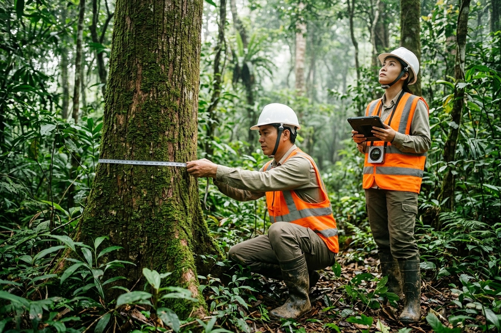
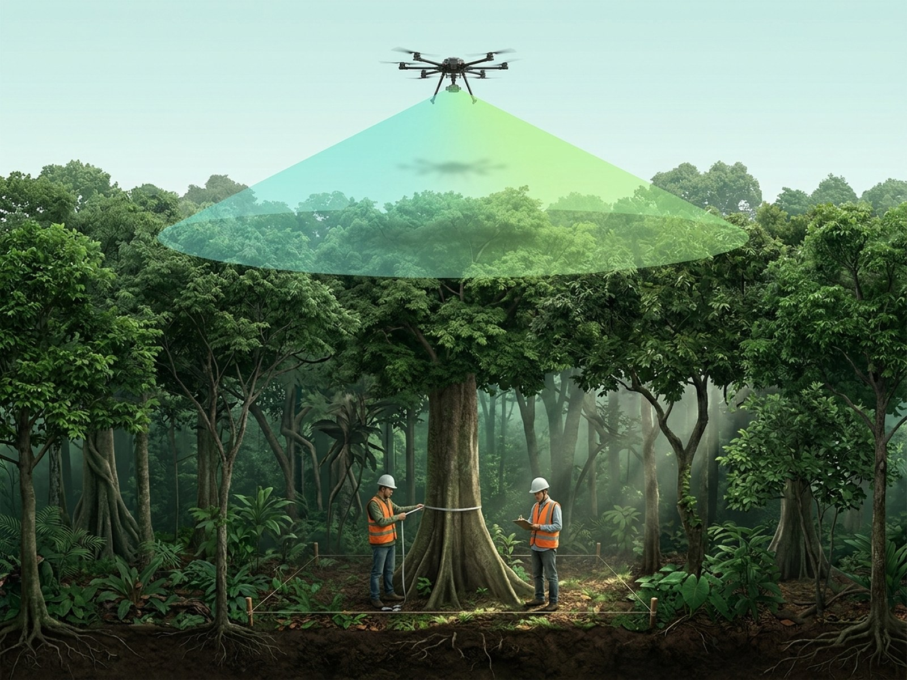
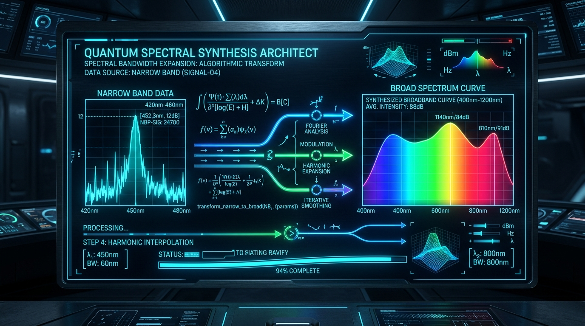
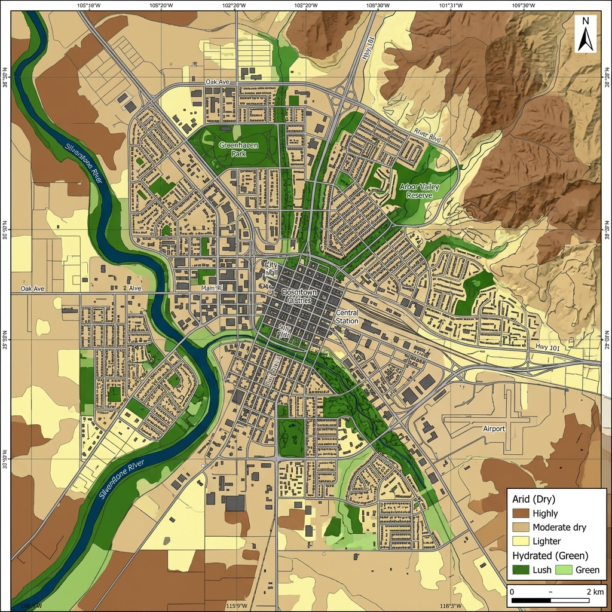
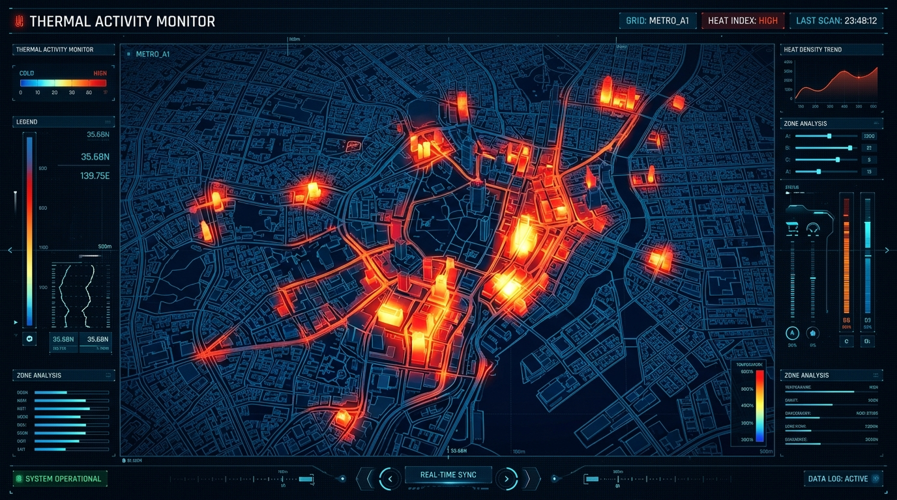
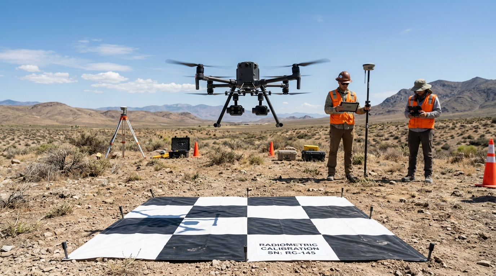
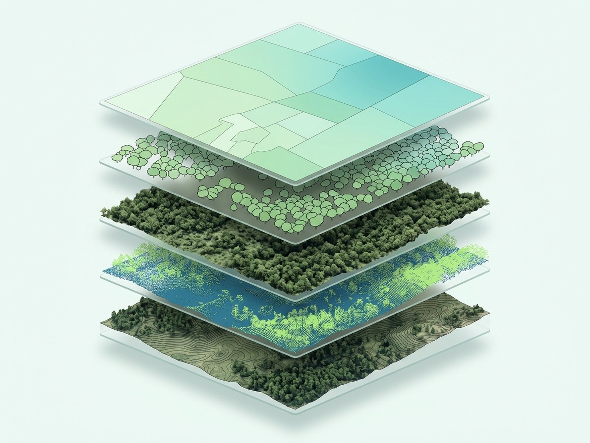
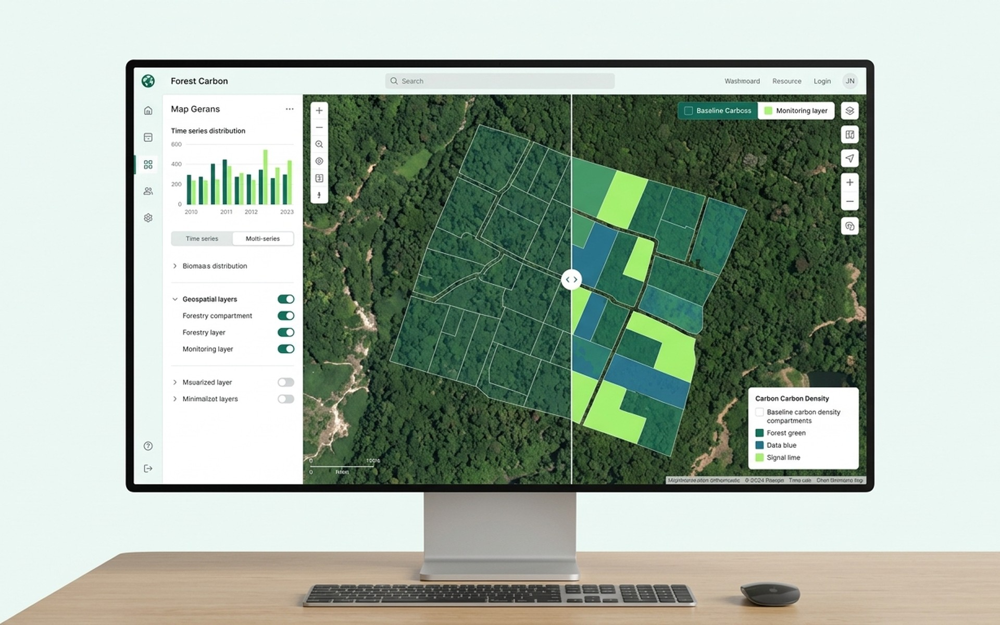
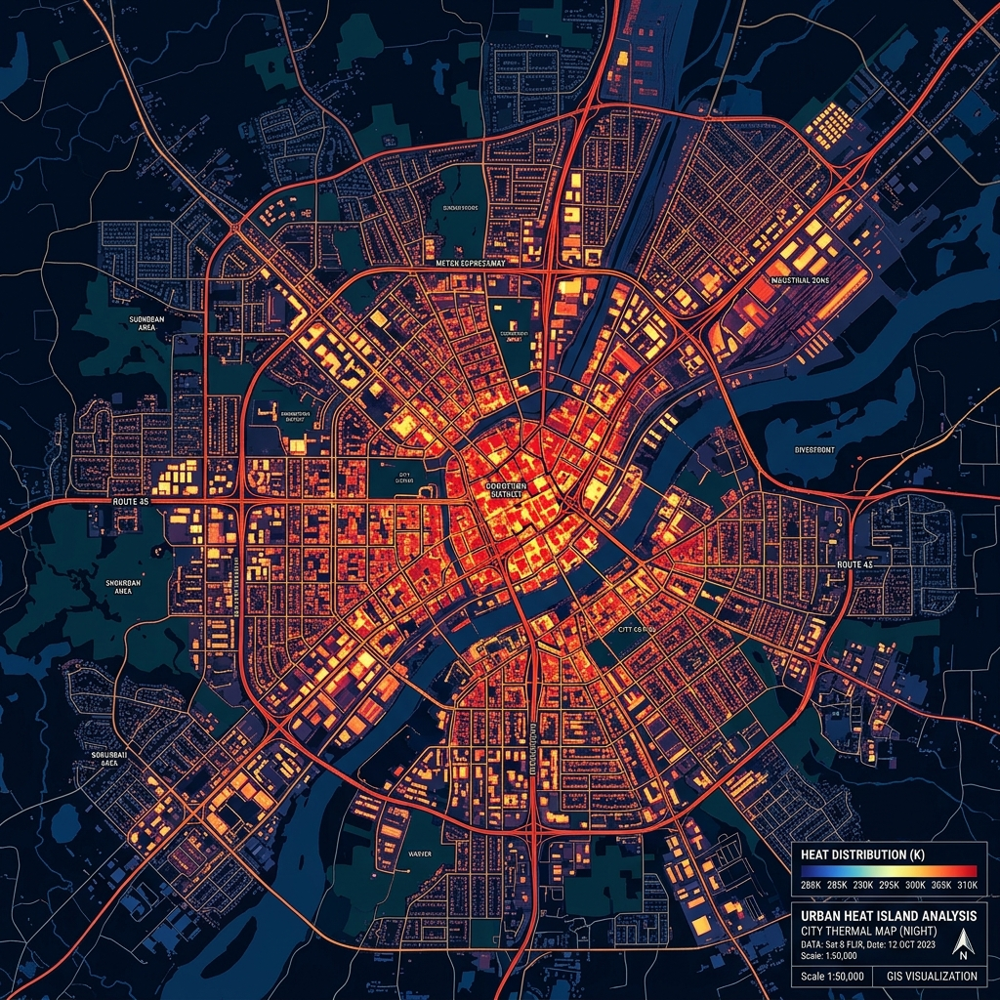

Đo độ ẩm tán rừng bằng cảm biến UAV
Thu thập dữ liệu đa phổ và nhiệt từ UAV kết hợp mẫu kiểm chứng mặt đất để ước tính hàm lượng ẩm lá (FMC), hỗ trợ giám sát sức khỏe rừng và phòng ngừa nguy cơ cháy rừng.
Khoảng trống Trong Quản lý Độ ẩm & Khô hạn Rừng
Khắc phục các rào cản cố hữu của việc đo đạc thủ công rời rạc, thiếu vắng số liệu định lượng về độ khô thảm lá ngọn tán trước cao điểm mùa khô.
Thiếu dữ liệu độ ẩm diện rộng có độ phân giải cao
Đo đạc thủ công chỉ lấy được vài điểm mẫu đơn lẻ, không phản ánh tính biến thiên liên tục trên lâm phận lớn hàng trăm hecta đồi núi hiểm trở.

Khó phát hiện sớm stress hạn và cây khô héo
Tán cây bị suy kiệt độ ẩm tế bào thường không biểu hiện rõ qua mắt thường ở giai đoạn đầu, dẫn đến phản ứng ứng phó chậm trễ khi rừng đã bước vào trạng thái dễ bắt cháy.

Hạn chế của phương pháp sấy mẫu thủ công
Quy trình trèo cắt cành tán cao và sấy mẫu mất nhiều ngày công lao động, số liệu trả về chậm, không kịp thời phục vụ chỉ đạo khẩn cấp mùa cao điểm PCCC rừng.

Thiếu dữ liệu số hóa theo dõi diễn biến rừng
Đơn vị quản lý thiếu các lớp bản đồ số hóa cập nhật định kỳ để theo dõi biến động khô hạn và sức khỏe rừng theo chuỗi thời gian liên tục qua các năm.

Đo & Ước tính Độ ẩm Tán rừng bằng UAV Tích hợp Đa tầng
GASCOLAE cung cấp dịch vụ đo và ước tính độ ẩm tán rừng bằng UAV, sử dụng cảm biến quang học đa phổ và cảm biến nhiệt radiometric kết hợp mẫu kiểm chứng mặt đất (ground-truth) để ước tính hàm lượng ẩm của lá (FMC), lập bản đồ phân vùng khô hạn và xác định tọa độ các khu vực có nguy cơ cao, hỗ trợ công tác quản lý sức khỏe rừng và phòng ngừa cháy rừng.
Chuyển dịch sang Quản trị Lâm phận Số hóa
Cung cấp bức tranh không gian liên tục với độ chính xác cao thay thế hoàn toàn các ước đoán cảm tính trên lâm phận đồi núi.
Bao phủ diện rộng, xóa điểm mù địa hình đồi núi
UAV RTK hỗ trợ thu thập dữ liệu trên hàng trăm hecta đồi núi hiểm trở theo kế hoạch nhiệm vụ lập trình tự động bám địa hình ngọn tán (Terrain Following), đảm bảo cự ly quét đồng nhất đến từng ngọn cây mà không phụ thuộc vào đường mòn hay độ dốc hiểm trở.
Cảnh báo sớm trạng thái stress hạn
Phát hiện sự suy giảm hàm lượng nước tế bào lá (FMC) trước khi tán cây xuất hiện dấu hiệu vàng héo bằng mắt thường từ 7–14 ngày.

Căn cứ định lượng hỗ trợ điều hành
Xuất danh mục tọa độ điểm nóng khô hạn (hotspot) hỗ trợ lực lượng kiểm lâm và chủ rừng bố trí chốt gác, tuần tra trúng đích vào mùa khô.

Cơ sở dữ liệu số hóa chuỗi thời gian
Dữ liệu viễn thám chuẩn hóa được lưu trữ, đối chiếu qua các mùa khô để theo dõi sức khỏe rừng và biến động hạn hán lâu dài.

Năng lực Thu thập & Mô hình hóa Khô hạn Rừng
Tích hợp nền tảng bay thấp bám địa hình, hệ cảm biến quang học đa phổ - nhiệt và thuật toán học máy đối chuẩn phòng thí nghiệm.
UAV Terrain Following
UAV RTK bay bám sát ngọn tán rừng trên địa hình đồi núi dốc, định vị độ chính xác centimet, duy trì khoảng cách cảm biến không đổi.

Multispectral Imaging
Camera đa phổ 4 băng tần (Green, Red, Red-Edge, NIR) bóc tách cấu trúc tế bào lá, hàm lượng diệp lục và độ che phủ thực bì.
Radiometric Thermal
Cảm biến nhiệt hồng ngoại sóng dài (LWIR 8–14 μm) đo phát xạ nhiệt và bốc thoát hơi nước tán lá phục vụ tính toán chỉ số bốc hơi.

Ground-truth Calibration
Lấy mẫu lá tươi cân sấy phòng lab tiêu chuẩn (85–105°C) đồng bộ với ca bay làm căn cứ đối chứng huấn luyện mô hình Machine Learning.

AI Crown Segmentation
Mô hình Mask R-CNN bóc tách tán cây riêng lẻ (Level 3); hỗ trợ thống kê mức độ chịu hạn chi tiết theo từng cây mục tiêu.

Web GIS Dashboard
Nền tảng GIS trực tuyến theo dõi chuỗi thời gian, tích hợp cảnh báo ranh giới nguy cơ cháy và chia sẻ dữ liệu đa cấp đơn vị quản lý.
Ai Cần Dữ liệu Độ ẩm Tán rừng từ UAV?
Giải pháp chuyên sâu phục vụ các Ban quản lý rừng, lực lượng Kiểm lâm PCCC, viện nghiên cứu sinh thái và đơn vị phát triển tín chỉ carbon.
Lập bản đồ độ ẩm tán rừng (FMC)
Chủ rừng và ban quản lý cần xác định mức độ ẩm thực tế của thảm lá chi tiết theo từng vạt cây hoặc ô tiêu chuẩn định kỳ.
Theo dõi stress nước theo mùa
Ban quản lý cần theo dõi diễn biến khô hạn qua các đợt bay trước, trong và sau cao điểm mùa khô để đánh giá nguy cơ suy thoái.
Đánh giá vật liệu cháy phục vụ PCCCR
Lực lượng kiểm lâm cần dữ liệu định lượng độ khô kiệt của thảm lá sống để chủ động bố trí phương án chốt chặn tuần tra mùa cháy.
Khoanh vùng ưu tiên kiểm tra thực địa
Đội bảo vệ rừng cần định vị chính xác các vạt rừng bị sốc khô hạn để điều phối lực lượng tuần tra trúng đích, tiết kiệm nguồn lực.
6 Bước Khảo sát Viễn thám Tán rừng Chuẩn hóa
Quy trình khép kín từ cấp phép bay Cục Tác chiến, bay quét đa phổ - nhiệt bám địa hình ngọn tán đến kiểm định mẫu sấy phòng lab.
Tiếp nhận Ranh giới & Lâm phận
Tiếp nhận file KML/Shapefile ranh giới tiểu khu rừng, đánh giá đặc điểm địa hình dốc và lập kế hoạch bay chi tiết.
Cấp phép Bay & Lập Tuyến
Hoàn tất thủ tục cấp phép bay Cục Tác chiến (theo NĐ 288/2025/NĐ-CP) và thiết kế tuyến bay Terrain Following bám ngọn tán.
Hiệu chuẩn Quang học & Điểm mẫu
Hiệu chuẩn tấm chuẩn phản xạ quang học hiện trường, định vị mạng lưới lấy mẫu mặt đất GNSS và kiểm tra điều kiện GO/NO-GO.
Bay Đa phổ/Nhiệt & Lấy Mẫu lá
Thực hiện ca bay thu thập dữ liệu đa phổ/nhiệt, đồng thời đội mặt đất thu thập mẫu lá tươi đại diện theo đúng quy trình bảo quản kín.
Sấy Mẫu Lab & Huấn luyện ML
Sấy mẫu lá phòng thí nghiệm (85–105°C), xác định tỷ lệ nước thực tế và huấn luyện mô hình Machine Learning ước tính FMC.
Xuất Báo cáo & Lớp GIS Lâm nghiệp
Bàn giao trọn gói ảnh trực giao GeoTIFF, bản đồ nhiệt, bản đồ raster FMC, polygon điểm nóng và báo cáo kiểm định sai số RMSE.
Lựa chọn Cấp độ Khảo sát Phù hợp
Thiết kế linh hoạt theo quy mô diện tích, mục đích giám sát sinh thái hay đánh giá nguy cơ cháy rừng mùa khô.
Level 1
- ✓ Bay quét quang phổ cơ bản kênh RGB / NIR
- ✓ Ảnh trực giao Orthomosaic GeoTIFF nắn chỉnh RTK
- ✓ Bản đồ hiện trạng phản xạ diệp lục ngọn tán
- ✓ Báo cáo thông số kỹ thuật chuyến bay & thời tiết
Level 2
- ✓ Camera đa phổ 4 băng tần (Green, Red, Red-Edge, NIR)
- ✓ Lấy mẫu lá tươi mặt đất & sấy phòng lab tiêu chuẩn 105°C
- ✓ Mô hình Machine Learning ước tính định lượng % FMC
- ✓ Bản đồ raster FMC và vector polygon khoanh vùng điểm nóng
- ✓ Danh mục tọa độ tâm (X, Y) phục vụ tuần tra kiểm tra
- ✓ Báo cáo kiểm định sai số mô hình hồi quy (RMSE, R²)
Level 3
- ✓ Bao gồm toàn bộ năng lực của Gói Level 2
- ✓ Tích hợp cảm biến nhiệt Radiometric Thermal LWIR (8–14 μm)
- ✓ Bản đồ nhiệt độ bức xạ bề mặt tán rừng (°C)
- ✓ Mô hình AI Mask R-CNN bóc tách tán cây riêng lẻ
- ✓ Phân tích chuỗi thời gian so sánh diễn biến qua các đợt bay
- ✓ Tích hợp Web GIS Dashboard theo dõi trực tuyến
Định dạng Dữ liệu Chuẩn hóa GIS Lâm nghiệp
Sản phẩm bàn giao tương thích trực tiếp với phần mềm QGIS, ArcGIS và các hệ cơ sở dữ liệu địa lý quản lý rừng quốc gia (VN-2000).

Orthomosaic RGB/NIR
Ảnh trực giao toàn khu vực ở kênh RGB và cận hồng ngoại (NIR) đã nắn chỉnh hình học RTK ở độ phân giải mức centimet.

Bản đồ FMC & Trạng thái Nước
Bản đồ raster định lượng hàm lượng ẩm của lá (% FMC) toàn lâm phận và theo từng ô tiêu chuẩn phục vụ đánh giá mức độ bắt cháy.

Bản đồ Nhiệt độ Tán lá
Lớp bản đồ nhiệt radiometric thể hiện mức độ phát xạ nhiệt bề mặt tán cây (°C), chỉ báo trực tiếp cho tình trạng thoát hơi nước thực bì.

Bản đồ Phân vùng & Điểm nóng
Lớp dữ liệu vector khoanh vùng các khu vực khô hạn nguy cơ cao kèm danh mục tọa độ tâm (X, Y) phục vụ lực lượng tuần tra hiện trường.

Báo cáo Kỹ thuật & Metadata
Tài liệu thuyết minh chi tiết phương pháp, kết quả đối chứng mẫu sấy phòng thí nghiệm, công bố minh bạch chỉ số sai số mô hình (RMSE, R²).
Tại sao Chọn GASCOLAE Cho Viễn thám Lâm nghiệp?
Cam kết quy trình viễn thám thực nghiệm khoa học, kết hợp hài hòa giữa công nghệ bay chụp độ chính xác cao và số liệu đối chuẩn thực tế.
Luồng Dịch vụ Khép kín (Integrated Service)
Từ khâu lập phương án bay bám ngọn tán, hiệu chuẩn bức xạ tấm chuẩn, thu mẫu lá thực địa đến huấn luyện Machine Learning và tích hợp GIS, loại bỏ hoàn toàn các khâu trung gian phân mảnh.
Đối chứng Thực nghiệm (Ground-truth Validation)
Không sử dụng các chỉ số NDVI lý thuyết đơn thuần; dữ liệu viễn thám được đối chứng trực tiếp với mẫu sấy khô phòng thí nghiệm tiêu chuẩn 105°C, công bố minh bạch sai số mô hình (RMSE, R²).
Sẵn sàng cho Nền tảng (Platform-ready)
Toàn bộ dữ liệu bản đồ được chuẩn hóa theo hệ quy chiếu quốc gia VN-2000 và WGS-84, sẵn sàng nạp trực tiếp vào hệ thống thông tin quản lý rừng (FMIS) và phần mềm điều hành của kiểm lâm.
Câu hỏi Thường gặp Về Dịch vụ S0284
Tổng hợp các giải đáp kỹ thuật về điều kiện thời tiết, quy chuẩn thiết bị và giá trị pháp lý của dữ liệu viễn thám lâm nghiệp.
Khảo sát Độ ẩm Tán rừng & Giám sát Mùa khô
Để lại thông tin lâm phận của bạn để nhận đề xuất giải pháp bay quét chuyên biệt và dự toán kinh phí từ chuyên gia GASCOLAE.